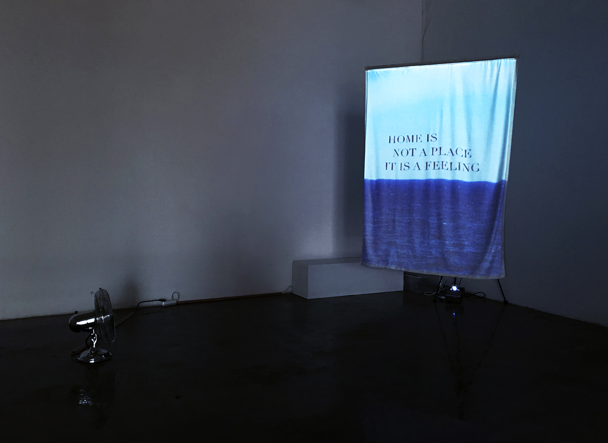

I'm Home
The recent Jei Lee’s installation raises the question of the coincidental nature of life. Jei asked me to support her in production as a technical director and developer.
Phrases about our relation to home are projected on a hanging piece of textile. A fan placed facing the textile makes it move, imitating the winds of change. Slight movements of the textile are recognised by an rgb-d sensor and used to trigger transitions between phrases, word by word.
“I’m Home” was exhibited at the 5th International Exhibition on New Media Art at CICA Museum in South Korea, March 29 – April 14, 2019.
